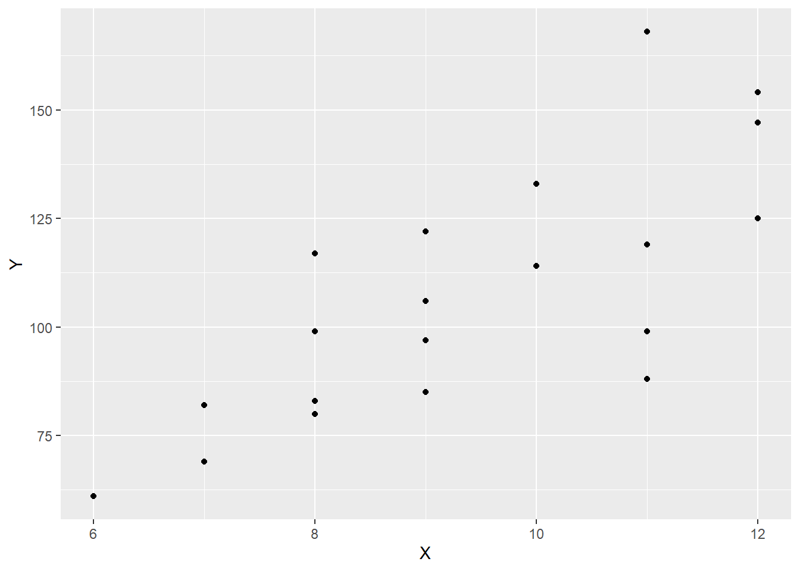
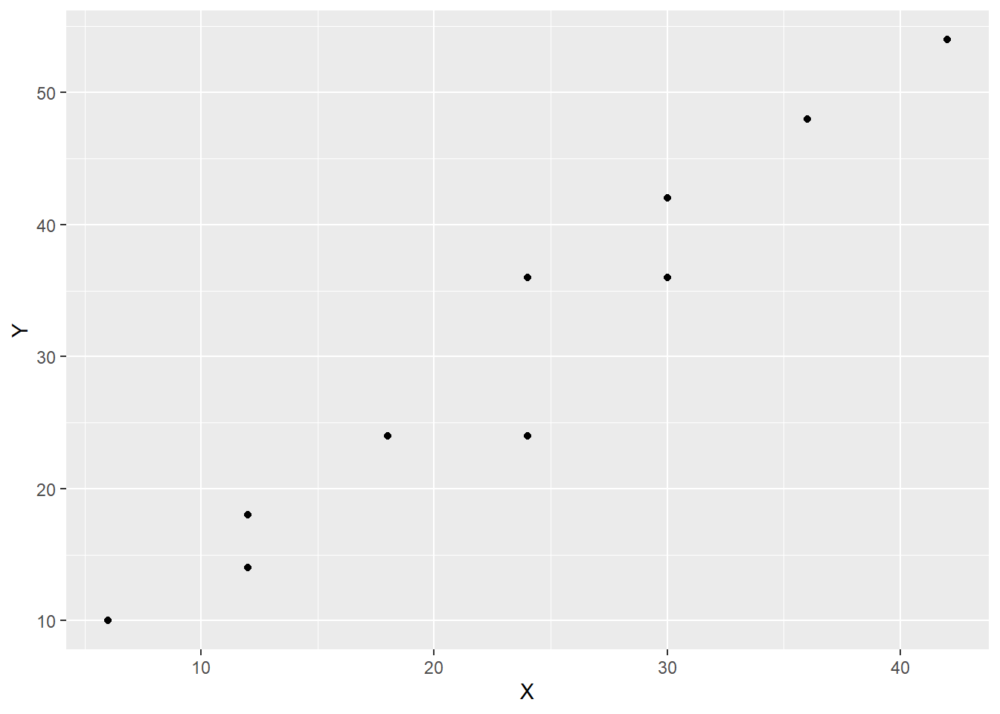

library(dplyr)
Attaching package: 'dplyr'The following objects are masked from 'package:stats':
filter, lagThe following objects are masked from 'package:base':
intersect, setdiff, setequal, unionlibrary(knitr)
library(ggplot2)library(dplyr)
Attaching package: 'dplyr'The following objects are masked from 'package:stats':
filter, lagThe following objects are masked from 'package:base':
intersect, setdiff, setequal, unionlibrary(knitr)
library(ggplot2)MetricasDados <- function(dados, N, xu = NA, tx = NA, alpha = 0.5) {
n <- nrow(dados)
B <- mean(dados[[2]])/mean(dados[[1]])
se <- var(dados[[2]] - B*dados[[1]])
t <- qt(1 - alpha/2, df = n - 1)
tibble(
`Estimador média AAS` = mean(dados[[2]]),
`Variância média AAS` = (1 - n/N)*var(dados[[2]])/n,
`Estimador média razão` = B*xu,
`Variância média razão` = (1 - n/N)*(xu/mean(dados[[1]]))^2*se/n,
`Total AAS` = N*mean(dados[[2]]),
`Variância total AAS` = N^2*(1 - n/N)*var(dados[[2]])/n,
`Total razão` = B*tx,
`Variância total razão` = (1 - n/N)*(tx/mean(dados[[1]]))^2*se/n,
`IC para média AAS` = list(`Estimador média AAS` + c(-t * sqrt(`Variância média AAS`), t * sqrt(`Variância média AAS`))),
`IC para média razão` = list(`Estimador média razão` + c(-t * sqrt(`Variância média razão`), t * sqrt(`Variância média razão`))),
`IC para total AAS` = list(`Total AAS` + c(-t*sqrt(`Variância total AAS`), t*sqrt(`Variância total AAS`))),
`IC para total razão` = list(`Total razão` + c(-t*sqrt(`Variância total razão`), t*sqrt(`Variância total razão`)))
)
}# Banco de Dados
Banco3 <- tibble(
X = c(12, 11, 8, 9, 11, 8, 7, 10, 12, 11, 6, 8, 10, 12, 9, 9, 7, 11, 9, 8),
Y = c(125, 119, 83, 85, 99, 117, 69, 133, 154, 168, 61, 80, 114, 147, 122, 106, 82, 88, 97, 99)
)Banco3 |>
ggplot() +
geom_point(aes(x = X, y = Y))
# Coeficiente de correlação
kable(cor(Banco3))| X | Y | |
|---|---|---|
| X | 1.0000000 | 0.7573225 |
| Y | 0.7573225 | 1.0000000 |
df1 <- MetricasDados(Banco3, N = 1132, xu = 10) |>
select_if(~ !any(is.na(.))) |>
select(-contains(c("total", "Variância")))
kable(df1)| Estimador média AAS | Estimador média razão | IC para média AAS | IC para média razão |
|---|---|---|---|
| 107.4 | 114.2553 | 103.0321, 111.7679 | 111.2171, 117.2936 |
# Banco de dados para a questão 4
Banco4 <- tibble(X = c(12, 30, 24, 24, 18, 30, 12, 6, 36, 42),
Y = c(18, 42, 24, 36, 24, 36, 14, 10, 48, 54))Banco4 |>
ggplot() +
geom_point(aes(x = X, y = Y))
kable(cor(Banco4))| X | Y | |
|---|---|---|
| X | 1.0000000 | 0.9729456 |
| Y | 0.9729456 | 1.0000000 |
df2 <- MetricasDados(Banco4, N = 200, tx = 15600) |>
select_if(~ !any(is.na(.))) |>
select(-contains(c("média razão", "Total AAS", "total AAS")))
kable(df2)| Estimador média AAS | Variância média AAS | Total razão | Variância total razão | IC para média AAS | IC para total razão |
|---|---|---|---|---|---|
| 30.6 | 20.94644 | 20400 | 509886.8 | 27.38383, 33.81617 | 19898.21, 20901.79 |